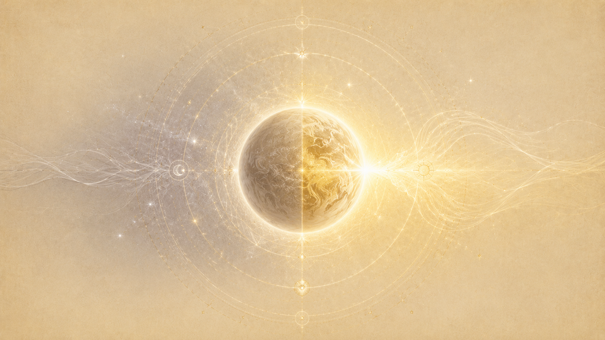
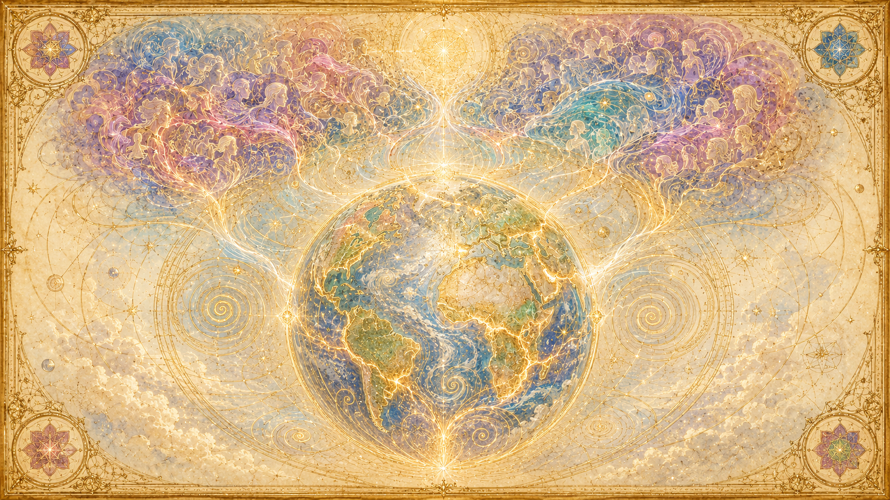
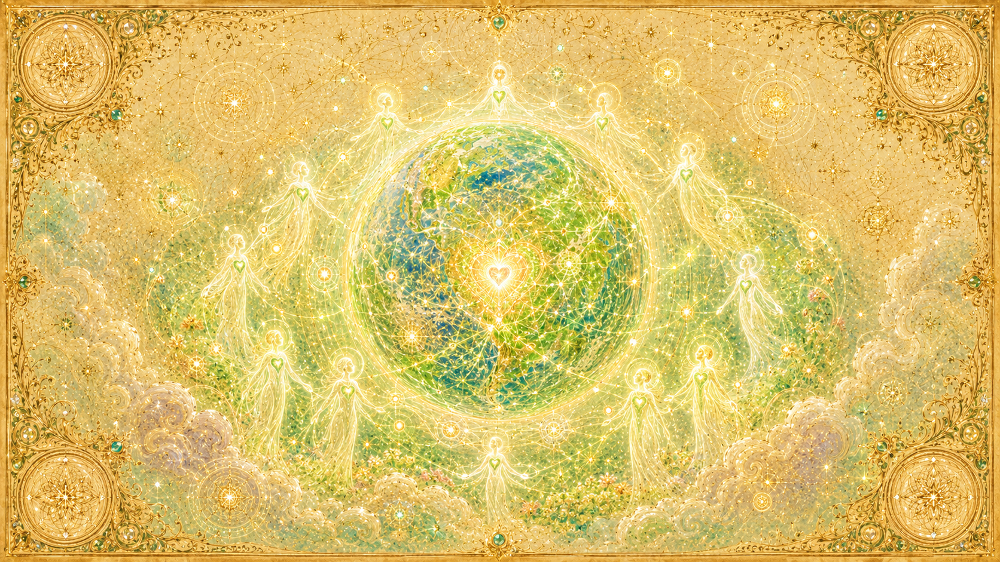
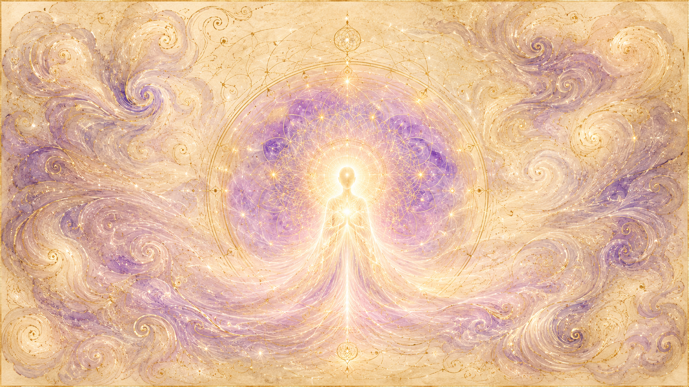

第三個大循環的尾聲:收割,就是現在
「這個不便、或說不和諧的振動複合體,已經在你們的若干年前開始了。它將持續不減約三十年。」

地球的第三密度演化,Ra 說是以「大循環(major cycle)」為單位推進的:「一個大循環大約是你們的兩萬五千年。」三個這樣的循環構成一整段第三密度的學習期,合計「大約七萬五千到七萬六千年」。我們此刻,正站在第三個、也是最後一個大循環的尾端。
這套節律不是誰隨意訂的。提問者問是什麼確立了這麼精準的時間,Ra 用時鐘作比:「活生生的流動創造出一種節律,它如同你們的計時器一樣無可避免……諸循環的移動,如同你們的時鐘敲響整點一樣精準。」收割的時機不是某個臨時的決定,而是像鐘擺一樣早已內建在創造的呼吸裡。
第三密度約在七萬五千年前被引入地球——當時來自火星、其行星已不宜居住的存有被轉移到這裡。前兩個大循環的收成都極其稀少:第一個循環結束時(約五萬年前),Ra 說「收穫是無」;第二個循環結束時(約兩萬五千年前),收成「雖然極小」,只有「對服務他人有著極端偏向」的少數存有,而且他們多半選擇留下、陪伴尚未可收割的其他自我,等對方也可被收割時再一同進入第四密度。換句話說,地球連續兩個兩萬五千年的循環,幾乎沒有人通過。
那麼這第三次呢?關於迫近程度,Ra 在 1981 年初給出明確的時間窗:這個不和諧的振動「已在若干年前開始」,並將「持續不減約三十年(thirty, of your years)」。從集會發生的時點往後推,這把收割的高峰指向 2011 年前後。Ra 同時謹慎地補一句:「收割尚未發生,因此估算沒有意義。」時間窗是真的,但確切結果仍懸而未定。
「存在上三密度,時空上四密度」——地球的雙重身分
「你們所居住的這顆球體,在心/身/靈複合體的存在性上是第三密度;它如今處在一個第四密度的時空連續體中。」
地球此刻最根本的處境,Ra 用一句話定調:「你們所居住的這顆球體,在它心/身/靈複合體的存在性上是第三密度;它如今處在一個第四密度的時空連續體中(now in a space/time continuum, fourth density)。」一邊是還在第三密度學習的人類意識,一邊是已經滑入第四密度的時空場域——這個錯位,正是地球現況一切張力的源頭。緊接著這句話,Ra 直接下了結論:「這正造成一個相當困難的收穫。」
機制是這樣的:「你們太陽系的時空,使這顆行星球體得以螺旋進入一個不同振動構型的時空。」承載地球的整個太陽系正在向前轉動,把地球帶進新的振動環境。Ra 把這個新進來的振動稱為「真實色彩的綠光(true-color green)」——也就是第四密度的振動;但它目前「沉重地與行星意識的橙光交織在一起」,新舊兩種頻率疊在同一顆星球上,彼此拉扯。
這股逐漸增強的綠光振動,已經開始作用於物質本身。Ra 說:「正是這股影響,已經開始使思想成為事物。舉例而言,你們可以觀察到憤怒的思想,變成了那些失控的肉體細胞——也就是你們所稱的癌症。」當思想開始具有實質的塑造力,尚未準備好的人會承受相當的壓力;Ra 甚至把當前大量的所謂「心智疾病」,歸因於「這真實色彩的綠光,作用在那些尚未準備好的人的心智構型上」。
過渡需要多久?Ra 給的範圍很寬:從第三密度到第四密度的過渡期,可能落在「你們的一百到七百年之間」。我們正活在這段過渡的早期——存在性還沒跟上時空,這就是「現況」二字最精準的注腳。
為什麼這是一場「困難的收穫」
Ra 不只一次用「困難」形容這次收割。原因不在外部條件,而在人類自身的振動狀態。
意識的指南針指不出方向
關鍵在 13.23。Ra 說,在這個過渡期,「你們人民的思想形態(thought-forms)是如此這般,以致個人與社會的心/身/靈複合體,被散布在整個光譜之中,而無法抓住那根針、把指南針指向同一個方向。」收割要求存有把自己的取向「定向」——選邊、聚焦;但大多數人的意識四散在光譜各處,無法收束成單一指向。Ra 由此直接導出結論:「因此,收穫將會是這樣:許多人會重複第三密度的循環。」
「快速老化」吃掉了學習的時間
另一層困難,是人的壽命被壓縮。Ra 在 15.4 解釋,這顆第三密度行星上發生「快速老化(rapid aging)」,原因是「這顆行星能量場的乙太部分,其接收網複合體持續處於不平衡」——人民的思想形態扭曲造成能量錯流,缺乏來自宇宙層級「平衡的振動光/愛」。Ra 接觸地球的服務目的之一,正是協助人們「更充分地理解並實踐一的法則,好讓這種快速老化能轉回正常的老化」。學習窗口被縮短,使收穫更加吃力。
祕密科技扼住了門戶
Ra 還點出一個社會層面的阻礙:被祕藏起來的軍事/能量科技,造成一種局面——「無論偏向服務他人的人、還是偏向服務自己的人,都無法獲得那種為社會記憶複合體開啟通往智能無限之門戶的能量/力量。這反過來使收穫變小。」整個物種無法形成統一、可收割的社會體,收成自然受限。
人類意識為何尚未統一
「個人與社會的心/身/靈複合體,被散布在整個光譜之中。」
地球若要脫離當前處境,Ra 給的處方非常簡單,卻也非常難:「一顆行星要脫離我們所在的這種處境,唯一的辦法……就是覺察到、並開始實踐一的法則。」問題在於,人類集體的意識四散在光譜兩端與中間的各個角落,既未統一向上,也未統一向下。
不過 Ra 特別澄清一個常見的誤解:從第三密度升上第四密度,並不要求人在智識上「理解」一的法則這套學說。真正必要的,只是「有意識地體認到:它並不理解(consciously realize it does not understand)」。真正的理解屬於更高密度;到了第五密度,才必須「有意識地接受一的法則的責任與榮耀」。所以人類意識的問題,不是知識不夠,而是取向未定、心未敞開。
那麼隔離與平衡的設計,又如何維持自由意志、讓抉擇保持真實?Ra 在第16場談到:守護者為地球設下隔離(quarantine),是為了保護第三密度存有不受那種他們還無法辨識的操縱所干擾。獵戶集團的操縱「在他們自身理解的維度上是可接受的」,但人類看不穿,於是「設下了隔離;這是一個取得平衡的安排,獵戶集團的自由意志並未被阻止,而是被給予一個挑戰」。
這套隔離透過「窗口(windows)」運作——隨機開啟、容許偶發接觸的時空缺口。Ra 把它比作「在某些限度內的隨機數產生器」,這些窗口來自「空間/時間之外的維度,也就是你們可稱為智能能量的領域」。整套平衡的目的,Ra 說得很直白:「總體自由意志被平衡,使每個個體都有均等的機會去選擇服務他人或服務自己。」——人類意識之所以維持在「未統一、可自由選邊」的狀態,本身就是這場第三密度功課得以成立的前提。
地震、天氣與人類集體心智的關係
「這將使你們的行星球體在它的外衣上出現一些裂口,同時把自己適當地磁化,以迎接第四密度。」

地球向第四密度過渡,不只是意識層面的事,也會顯化在物理的星球本身。Ra 在 17.1 描述:這個過程「將使你們的行星球體在它的外衣上出現一些裂口(some ruptures in its outer garment),同時把自己適當地磁化,以迎接第四密度」。星球要「在電磁上重新校準它接收宇宙力量內流的漩渦」,把自己調到新的振動網上——這份重新排列,在物理層面就會表現為地殼的變動。
最關鍵的一點,是 Ra 把行星變動的劇烈程度,直接連回了人類集體的心智狀態。祂說,這一切「會帶著某些不便發生……這是由於你們人民思想形態(thought-forms)的能量,擾動了你們地球能量螺旋之內那原本有序的能量構造,從而增加了熵與無法使用的熱(unusable heat)。」換句話說,人類集體不和諧的念頭,擾亂了星球的能量循環,把秩序變成熵、變成多餘的熱——而星球必須把這些累積的壓力釋放出來。
同樣的邏輯也出現在快速老化的解釋裡:行星能量場的乙太接收網之所以失衡,正是因為「人民的思想形態扭曲造成能量錯流」。地球的身體與人類的集體心智,是同一個能量系統的兩端。人類愈不和諧,星球承受的張力就愈大,顯化為變動的能量也就愈強。
這也意味著:行星變動的劇烈與否,並非全然命定。Ra 在談潛在的毀滅性發展時,態度一貫地謹慎(10.8):「我們覺得對你們行星心/身/靈複合體所謂『未來』的這種評估,可能弊大於利。我們只說:發展出這類科技、這類部署的『心智條件』是存在的。」祂把焦點從「拆掉玩具」轉回「重新定向心智」:「需要被定向的是你們人民的心智與靈性複合體,而非那些『玩具』需要被拆解……因此,自由地選擇,是你們的榮耀/責任。」星球會釋放它必須釋放的;但人類集體心智愈趨於和諧,這個釋放過程就愈可能溫和。
第四密度地球會是什麼樣子
「你必須把地球看成是七個地球。有紅、橙、黃,而很快將會有一個完成的綠色振動軌跡,給第四密度存有,他們會稱它為地球。」

七個地球,而非一個
Ra 提供了一個關鍵畫面:同一個空間裡,其實存在多重振動的地球。「你必須把地球看成是七個地球。有紅、橙、黃,而很快將會有一個為第四密度存有而完成的綠色振動軌跡(green-color vibratory locus),他們會稱它為地球。」第四密度地球不是取代現在這顆,而是在同一處浮現出的另一個振動層次。Ra 並指出,在過渡的早期,「第三密度的行星球體對於居住並不適用」,因為初期的第四密度存有還不懂得如何維持次元上的隱形。
身體與細胞,要慢慢長成「愛的密度」
第四密度的身體不會瞬間造好,而是透過雙性生殖逐漸演化。Ra 說:「真實色彩的綠光能量複合體,將愈來愈多地創造出這樣的條件:身體複合體細胞的原子結構,成為愛之密度的原子結構。」星球的綠光振動逐步把物質本身重塑成能承載愛的材質。
慈悲的密度,社會記憶複合體萌芽
第四密度正向,Ra 在別處稱之為「充滿慈悲、並理解第三密度諸般悲傷的平面」。個體差異雖然鮮明,卻「被群體共識自動地調和」——這就是「社會記憶複合體(social memory complex)」的雛形:存有們發現彼此服務取向一致,自願把自己的資料放進一個人人可取用的中央思想複合體,源自共鳴而非命令。地球此刻正在孕育的,正是這樣一個能彼此真實看見、不再隱藏的群體心智。而 Ra 在 8.1 點出的困境也正在這裡:祕密科技讓人類遲遲無法為「社會記憶複合體」開啟通往智能無限的門戶——第四密度地球的萌芽,卡在這道門上。
流浪者與聯邦此刻如何協助
約六億流浪者,此刻在地球
Ra 在 63 場說明,地球目前同時住著三類存有:本地的第三密度居民、從別的行星轉來體驗地球過渡的可收割存有,以及流浪者。關於流浪者的數量,Ra 給出一個驚人的數字:「大約六億流浪者(600 million wanderers)」此刻投生在地球,而且「還有些超出這個數量」。他們是來自更高密度、自願下來協助這場收割的存有。
流浪者的服務,核心是「輻射」。Ra 說他們帶來的功能至少有三層,「前兩項是基本的,第三項則是那個心/身/靈複合體獨有的」——基本的就是輻射「愛與愛/光」,把更高密度的振動帶進地球的場域;第三項則因人而異,因為「帶進這個密度的才能相當多樣」。Ra 也預告:「你會發現一群人數急遽增加……他們的振動潛能包含第四密度扭曲的潛能。因此將會出現,所謂的『新品種』。這些是為了第四密度的工作而投生的人。」
但流浪者要付代價。他們投生後常會「遺忘」自己的來歷與目的,被困在第三密度的限制裡;一旦在地球累積扭曲(業力),離開時也得處理。Ra 舉耶穌為例——「一位沒有名字的流浪者,屬聯邦來歷,第五密度」,自願下來「以盡可能純粹的方式分享愛的振動」;而耶穌年少時,曾在憤怒中無意間透過接觸到的無限智能,致命地傷了一個玩伴,以此學到了未經調控的力量的後果。流浪者的協助,本身就是一種冒險。
聯邦:等待被召喚,不請自來即是侵犯
協助地球的「聯邦(Confederation of Planets in the Service of the Infinite Creator)」,Ra 說它約由「五十三個文明」組成。但他們的協助方式極其克制。在 8.1,提問者問:既然這麼多人渴望這份教導卻不知道它存在,聯邦做「廣告」會不會違反自由意志?Ra 的回答是靠「有機的發現」:請回想你自己生命中那些巧合、那些一件事流向下一件事的奇特際遇——「每個存有都會收到它所需要的機會。」
聯邦也曾嘗試更直接的接觸,後來主動退回。Ra 說:「在觀察了那些經歷這種體驗序列的人所產生的扭曲後,我們決定逐漸地、可以說、從思想形態的直接接觸後退。」最小扭曲的方式,是「心對心的溝通」。這份克制的根源,正是「等待被召喚」的原則:不請自來的幫助,可能本身就是對自由意志的侵犯。聯邦不能、也不會強行登陸來「拯救」地球。
收割的時間與可收割人數的估計
「在混合收穫的情況下,收穫的大多數為負向,幾乎是聞所未聞的。」
時間:約三十年的窗口
如前所述,Ra 在 1981 年初給出的時間窗,是這個不和諧振動「已在若干年前開始」、並將「持續不減約三十年」,指向 2011 年前後。但 Ra 一再聲明:「收割尚未發生,因此估算沒有意義。」這是一個過程、一個窗口,而非某一天的事件。
三分收成的結構
收割不是「過/不過」二選一,而是「三向分流(three-way split)」。地球本地的第三密度存有,將依取向分成三類:偏向服務他人、可收割進正向第四密度者;負向極化、可收割到另一顆行星者;以及其餘將前往另一個第三密度世界、重新來過的人。前面提到「許多人會重複第三密度的循環」,指的就是第三類。
人數的估計
關於可收割的比例,Ra 在 65 場給了一組估計:「大約 10% 是負向的;大約 60% 是正向的;大約 30% 是混合的。」並補充一句意味深長的話:「在混合收穫的情況下,收穫的大多數為負向,幾乎是聞所未聞的。」——也就是說,混合的那部分,最後多半會倒向正向。
另外,從別的行星轉來地球、體驗這場第四密度過渡的可收割存有,Ra 說「數量尚未超過 35,000 個存有」,並稱這是「一個近期的現象」。這些轉入者帶著「一具啟動中的雙重身體」,能在內流增強時欣賞第四密度的振動,而不致擾亂第三密度的身體;那些會折彎金屬的孩子,就屬於這類擁有已啟動第四密度身體的存有。
個人此刻該如何面對
「真正的療癒,僅僅是自我的輻射,造就出一個環境,在其中催化劑得以發生,啟動自我對自我的認出。」

把眾多變動,看成服務的機會
面對過渡期的種種動盪,Ra 的視角不是恐懼,而是機會。祂在 65 場說,這段時期會帶來「更大的服務機會,因為許許多多的變動,將提供許多挑戰、困難與看似的苦難」。動盪本身就是催化劑;愈是艱難的時刻,愈是兩極化、愈是服務的契機。Ra 也指出,「以投生振動排序的資深者(seniority by vibration)」已大大極化了此刻在地表的人,而流浪者的湧入,更把集體的心智構型「大幅推向更具靈性本質的事物」。
專注於心,而非壽命或外在成效
Ra 反覆把焦點拉回內在。在談快速老化時,祂提醒不要把心力放在延長壽命上,而要放在「自我的心(the heart of self)」——因為決定每個心/身/靈複合體收割結果的,是「紫光(violet-ray)」的能量,也就是整體存在的總和振動。收割不看你做了多少看得見的事,而看你整個存在輻射出的品質。
用輻射,而非用力
那麼此刻能做的最有力的事是什麼?Ra 給流浪者(其實也給每個人)的答案是「輻射」:「真正的療癒,僅僅是自我的輻射,造就出一個環境,在其中催化劑得以發生,啟動自我對自我的認出。」你不必去「改造」誰、不必去拆掉誰的「玩具」;你把自己活成一個和諧的振動場,就已經在協助這顆星球與身邊的人。
定向,從冷漠中走出來
最後,呼應收割的核心:這場困難收穫的關鍵,是能不能「抓住那根針、把指南針指向同一個方向」。地球此刻的功課,對個人而言就是「定向」——從那片不冷不熱、四散在光譜中的狀態裡走出來,有意識地選邊、敞開心、服務他人。Ra 給地球開的處方始終是同一句:覺察到、並開始實踐一的法則。而這件事,從來不需要先「理解」它,只需要先去活它。